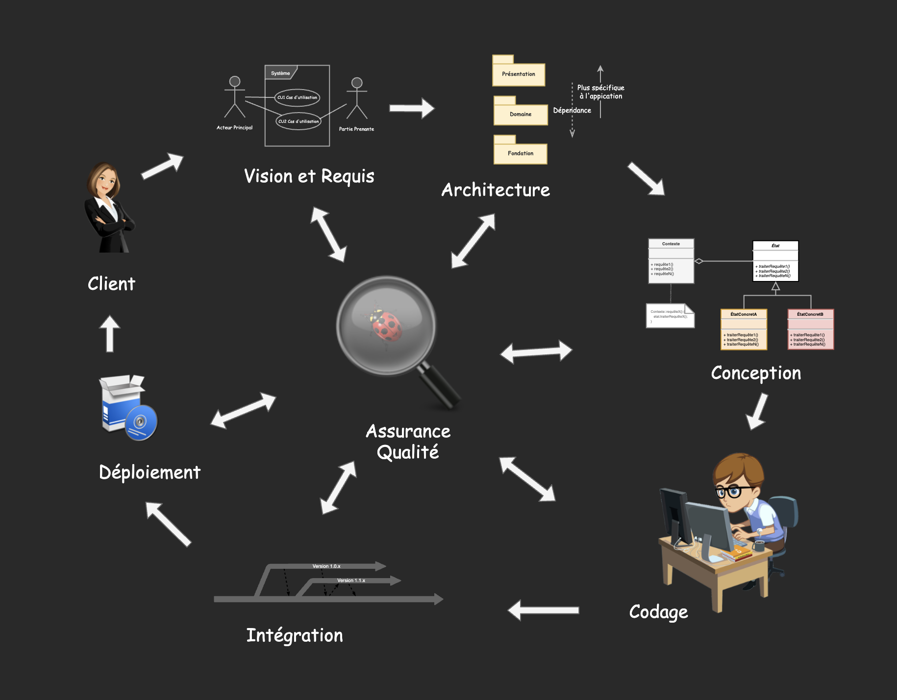
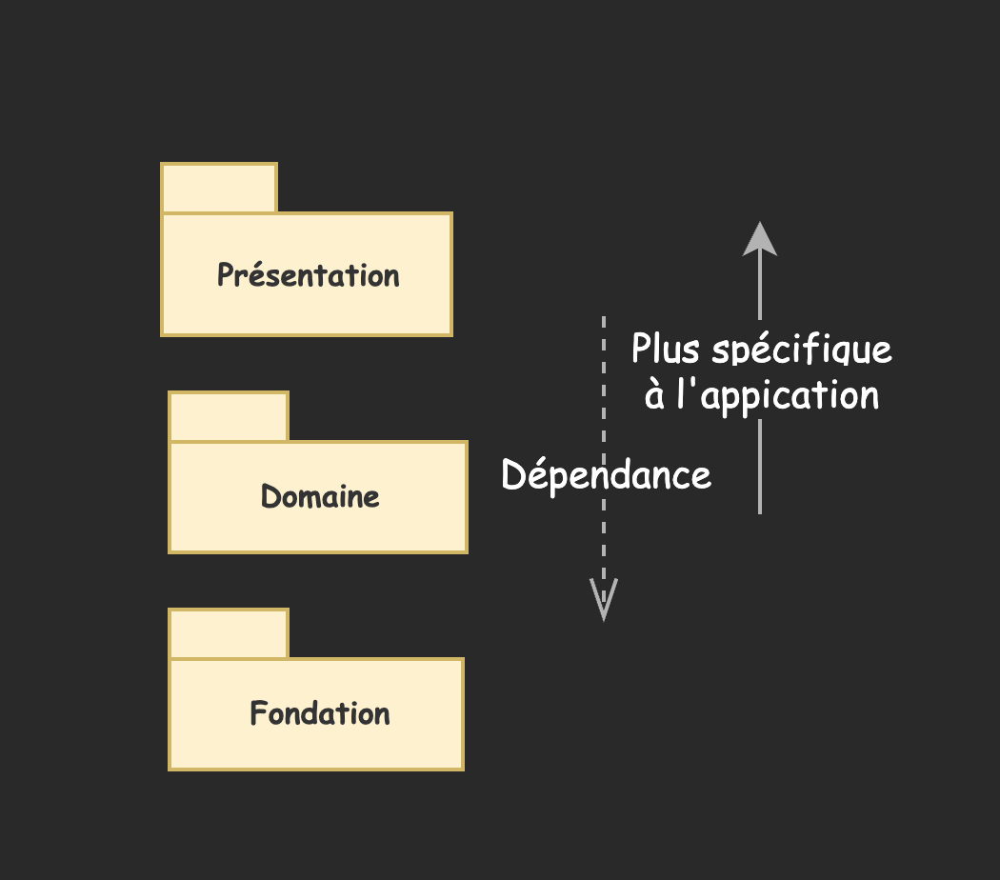
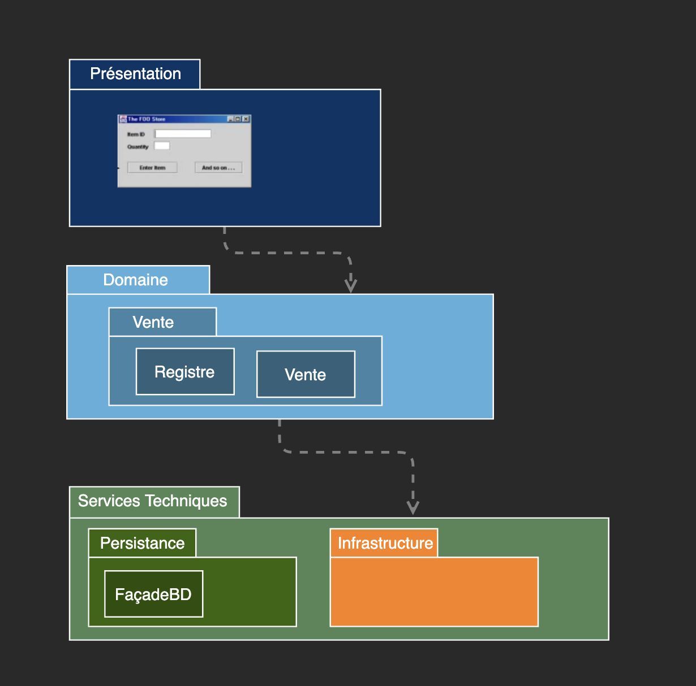
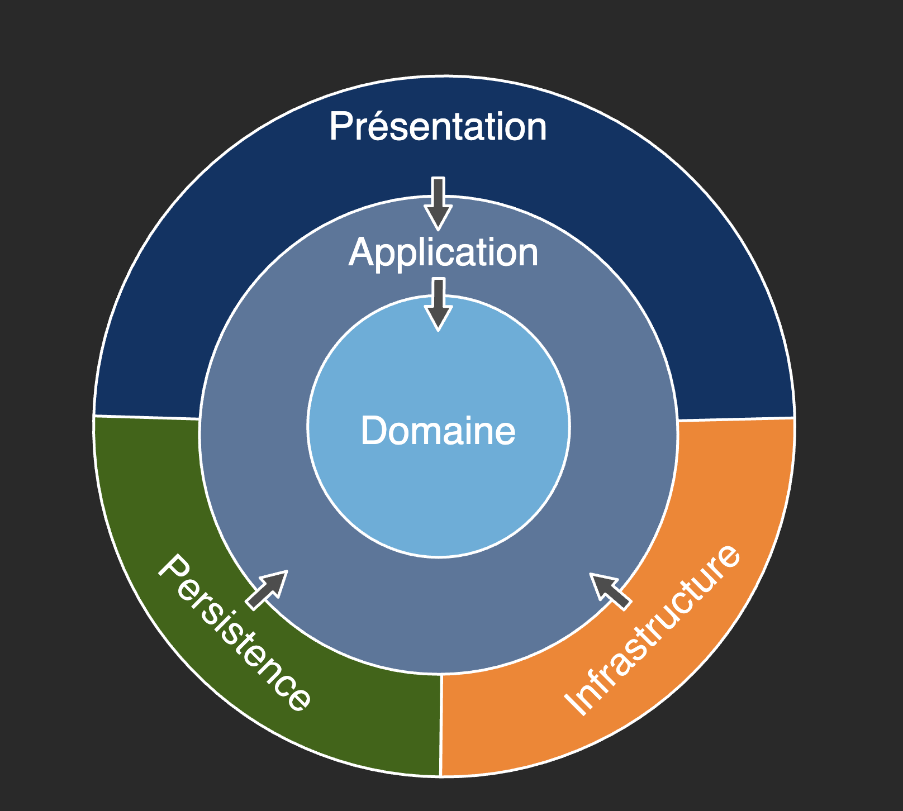

Eric Demers, Michel Gagnon et Lévis Thériault
Le processus de conception
L'architecture logicielle
Stratégies antagonistes pour résoudre un problème
«If you can't solve a problem, then there is an easier problem you can't solve: find it"»
[en.wikipedia.org/wiki/How_to_Solve_It]«Au lieu de résoudre un problème spécifique, qui semblerait intuitivement plus facile, il peut être plus facile de résoudre un problème plus général, qui couvre les spécificités de la solution recherchée.»
Architecture classique en couches
Architecture en onion (Clean Architecture)
Visibilité entre les objets
Aptitude d'un objet à voir un autre objet et donc concrètement d'avoir une référence à un autre objet
Types de visibilité entre les objets
Dépendance (couplage) entre les classes
Un classe est couplée à une autre classe ou en dépend
Types de dépendances entre les classes
Distinguez dépendance (couplage) entre les classes et visibilité entre les objets (instances de classes)